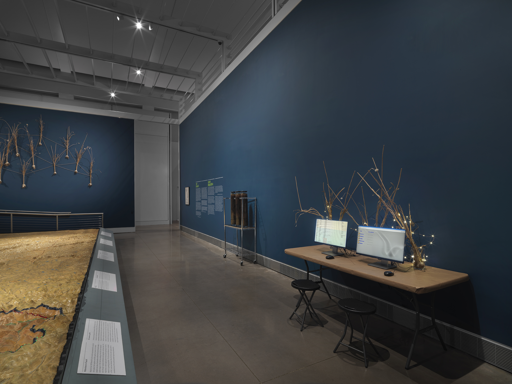
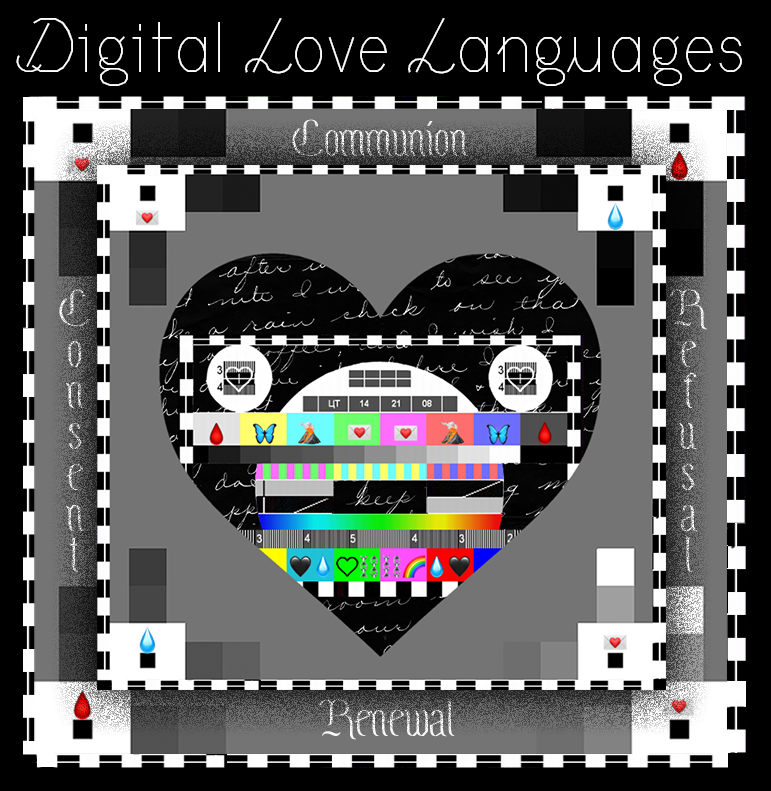

Melanie Hoff is an artist, organizer, technologist, and educator committed to cultivating spaces of learning and feeling that encourage honesty, poetry, and reconciliation for the ways we are shaped by intersecting systems of classification and power. Melanie engages hacking and performance to express the absurdities of these systems while revealing the encoded ways in which they influence how we choose to live and what choices have been made for us. They teach about sex, technology, and social cybernetics at the School for Poetic Computation, Yale University, New York University, and have shown work at the New Museum, the Queens Museum, and elsewhere.
In 2021-2024 Melanie has been a co-director of two organizations, School for Poetic Computation and Hex House. In 2021 Melanie co-founded Hex House. At both organizations they have led efforts towards institutional change that has made who can work and be part of these spaces radically more accessible for people who are underrepresented in art and technology.
Across their roles as co-director, poet, artist and organizer they care about affirming and expanding the ways people are already adept at programming their environments.
Always Already Programming
instagram ⟿ twitter ⟿ are.na ⟿ email
In 2023, Melanie focused on performance art and created six unique public performances about expanded notions of sex, the structure of language, collective transformation, political theatre, failure, friendship and community fracture.
2022 & 2024: Lead organizer of SFPC: Sex Ed, a pleasure and queer centered education intensive for adults designed to create the sex education we never had, but always sought. SFPC: Sex Ed is for those who believe sex is a subject of knowledge worthy of careful rigorous study.
2021: Installed two installations as part of Wet Networks at the Queens Museum curated by Celine Katzman in parternship with Rhizome and CycleX.

2021-2022: Taught Cybernetics of Desire and Digital Love Languages at Yale School of Art's Design program.
2020 and 2021: Taught Cybernetics of Sex: Technology, Feminisms, & the Choreography of Control at NYU ITP's grad program.
You can watch a visiting artist lecture they gave at Parsons in Summer 2020here.
Summer 2020: Taught Digital Love Languages, a class based on the premise that a world where all the software we use is made by people who love us, is possible. This was held online for 10 weeks as part of the School for Poetic Computation's Summer 2020 session.

April 2020: collaborated with BUFU on Cloud9, a platform and to share care, strategies, wisdom, sweetness, resources, and support to everyone affected by the coronavirus pandemic.

In 2018, 2019, & 2020, they organized Code Societies with Neta Bomani & Emma Rae Norton; a 3 week intensive educational program at the School for Poetic Computation in it's 3rd iteration. Check out the blog post on Cybernetics of Race/ism & Sex/ism as well as our Code Societies Oral History Recordings.